More Matplotlib#
Matplotlib is the dominant plotting / visualization package in python. It is important to learn to use it well. In the last lecture, we saw some basic examples in the context of learning numpy. This week, we dive much deeper. The goal is to understand how matplotlib represents figures internally.
from matplotlib import pyplot as plt
%matplotlib inline
Figure and Axes#
The figure is the highest level of organization of matplotlib objects. If we want, we can create a figure explicitly.
fig = plt.figure()
<Figure size 640x480 with 0 Axes>
fig = plt.figure(figsize=(13, 5))
<Figure size 1300x500 with 0 Axes>
fig = plt.figure()
ax = fig.add_axes([0, 0, 1, 1])
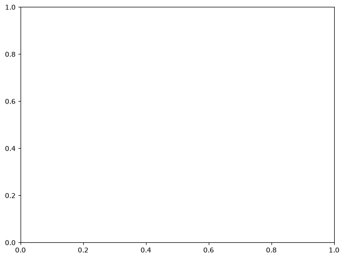
fig = plt.figure()
ax = fig.add_axes([0, 0, 0.5, 1])
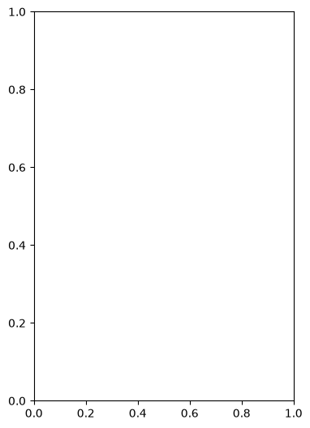
fig = plt.figure()
ax1 = fig.add_axes([0, 0, 0.5, 1])
ax2 = fig.add_axes([0.6, 0, 0.3, 0.5], facecolor='g')
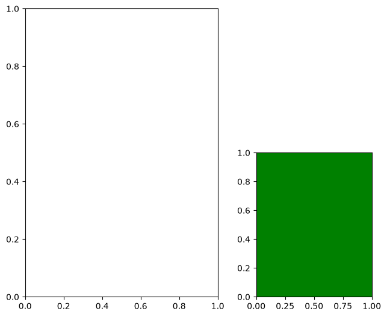
Subplots#
Subplot syntax is one way to specify the creation of multiple axes.
fig = plt.figure()
axes = fig.subplots(nrows=2, ncols=3)
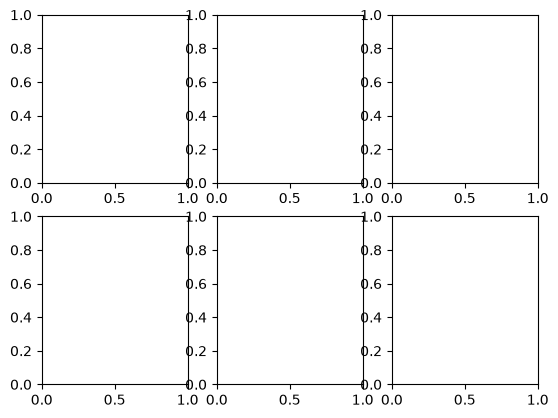
fig = plt.figure(figsize=(12, 6))
axes = fig.subplots(nrows=2, ncols=3)
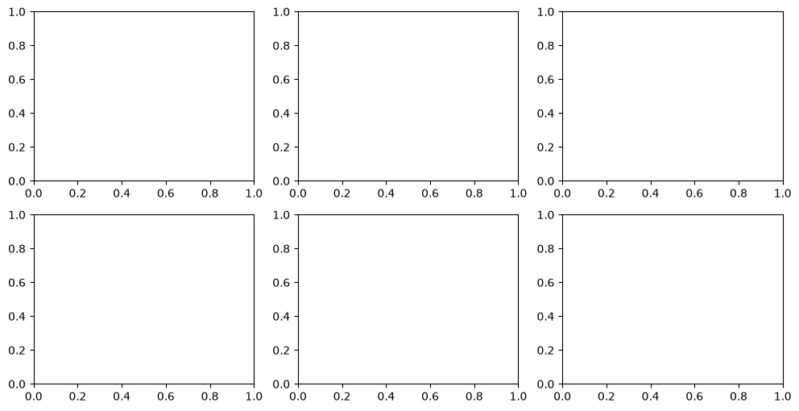
axes
array([[<Axes: >, <Axes: >, <Axes: >],
[<Axes: >, <Axes: >, <Axes: >]], dtype=object)
There is a shorthand for doing this all at once.
This is our recommended way to create new figures!
fig, ax = plt.subplots()
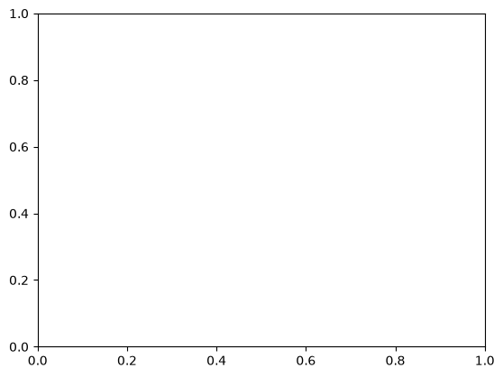
ax
<Axes: >
fig, axes = plt.subplots(ncols=2, figsize=(8, 4), subplot_kw={'facecolor': 'g'})
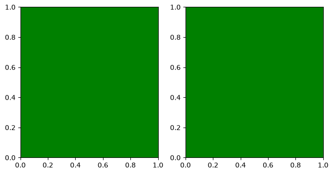
axes
array([<Axes: >, <Axes: >], dtype=object)
Drawing into Axes#
All plots are drawn into axes. It is easiest to understand how matplotlib works if you use the object-oriented style.
# create some data to plot
import numpy as np
x = np.linspace(-np.pi, np.pi, 100)
y = np.cos(x)
z = np.sin(6*x)
fig, ax = plt.subplots()
ax.plot(x, y)
[<matplotlib.lines.Line2D at 0x107d79e80>]
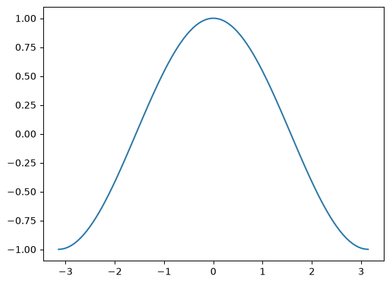
This does the same thing as
plt.plot(x, y)
[<matplotlib.lines.Line2D at 0x116698d40>]
This starts to matter when we have multiple axes to worry about.
fig, axes = plt.subplots(figsize=(8, 4), ncols=2)
ax0, ax1 = axes
ax0.plot(x, y)
ax1.plot(x, z)
[<matplotlib.lines.Line2D at 0x11671aae0>]
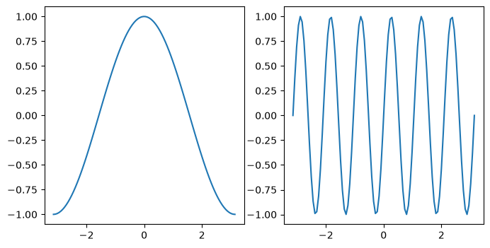
Labeling Plots#
fig, axes = plt.subplots(figsize=(8, 4), ncols=2)
ax0, ax1 = axes
ax0.plot(x, y)
ax0.set_xlabel('x')
ax0.set_ylabel('y')
ax0.set_title('x vs. y')
ax1.plot(x, z)
ax1.set_xlabel('x')
ax1.set_ylabel('z')
ax1.set_title('x vs. z')
# squeeze everything in
plt.tight_layout()
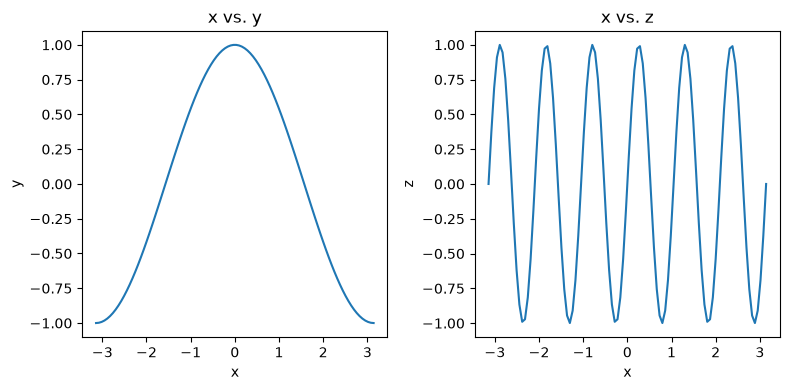
Customizing Line Plots#
fig, ax = plt.subplots()
ax.plot(x, y, x, z)
[<matplotlib.lines.Line2D at 0x116847f20>,
<matplotlib.lines.Line2D at 0x116788b90>]
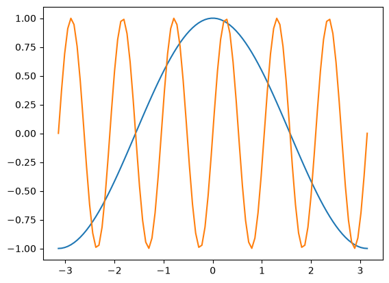
It’s simple to switch axes
fig, ax = plt.subplots()
ax.plot(y, x, z, x)
[<matplotlib.lines.Line2D at 0x1168b8c50>,
<matplotlib.lines.Line2D at 0x1168d0c50>]
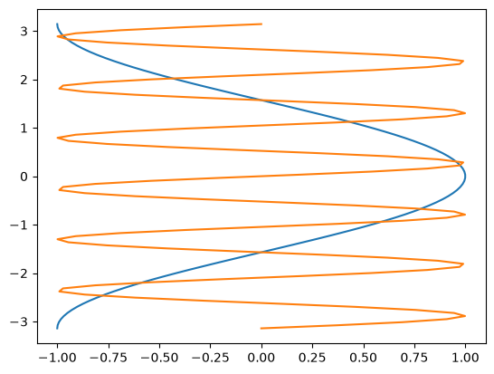
A “parametric” graph:
fig, ax = plt.subplots()
ax.plot(y, z)
[<matplotlib.lines.Line2D at 0x116905ca0>]
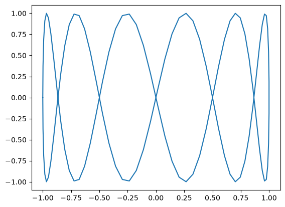
Line Styles#
fig, axes = plt.subplots(figsize=(16, 5), ncols=3)
axes[0].plot(x, y, linestyle='dashed')
axes[0].plot(x, z, linestyle='--')
axes[1].plot(x, y, linestyle='dotted')
axes[1].plot(x, z, linestyle=':')
axes[2].plot(x, y, linestyle='dashdot', linewidth=5)
axes[2].plot(x, z, linestyle='-.', linewidth=0.5)
[<matplotlib.lines.Line2D at 0x116a19010>]
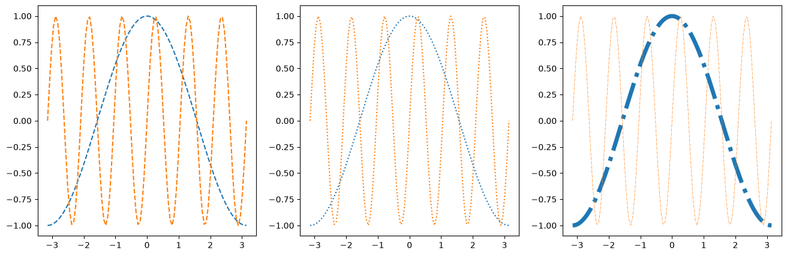
Colors#
As described in the colors documentation, there are some special codes for commonly used colors:
b: blue
g: green
r: red
c: cyan
m: magenta
y: yellow
k: black
w: white
fig, ax = plt.subplots()
ax.plot(x, y, color='k')
ax.plot(x, z, color='r')
[<matplotlib.lines.Line2D at 0x116068b30>]
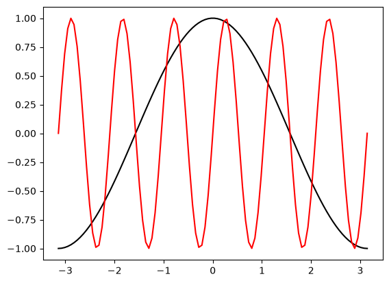
Other ways to specify colors:
fig, axes = plt.subplots(figsize=(16, 5), ncols=3)
# grayscale
axes[0].plot(x, y, color='0.8')
axes[0].plot(x, z, color='0.2')
# RGB tuple
axes[1].plot(x, y, color=(1, 0, 0.7))
axes[1].plot(x, z, color=(0, 0.4, 0.3))
# HTML hex code
axes[2].plot(x, y, color='#00dcba')
axes[2].plot(x, z, color='#b029ee')
[<matplotlib.lines.Line2D at 0x107e58320>]
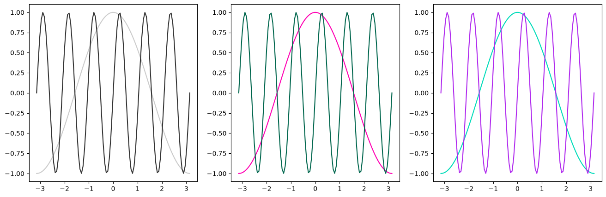
There is a default color cycle built into matplotlib.
plt.rcParams['axes.prop_cycle']
| 'color' |
|---|
| (0.12156862745098039, 0.4666666666666667, 0.7058823529411765) |
| (1.0, 0.4980392156862745, 0.054901960784313725) |
| (0.17254901960784313, 0.6274509803921569, 0.17254901960784313) |
| (0.8392156862745098, 0.15294117647058825, 0.1568627450980392) |
| (0.5803921568627451, 0.403921568627451, 0.7411764705882353) |
| (0.5490196078431373, 0.33725490196078434, 0.29411764705882354) |
| (0.8901960784313725, 0.4666666666666667, 0.7607843137254902) |
| (0.4980392156862745, 0.4980392156862745, 0.4980392156862745) |
| (0.7372549019607844, 0.7411764705882353, 0.13333333333333333) |
| (0.09019607843137255, 0.7450980392156863, 0.8117647058823529) |
fig, ax = plt.subplots(figsize=(12, 10))
for factor in np.linspace(0.2, 1, 11):
ax.plot(x, factor*y)
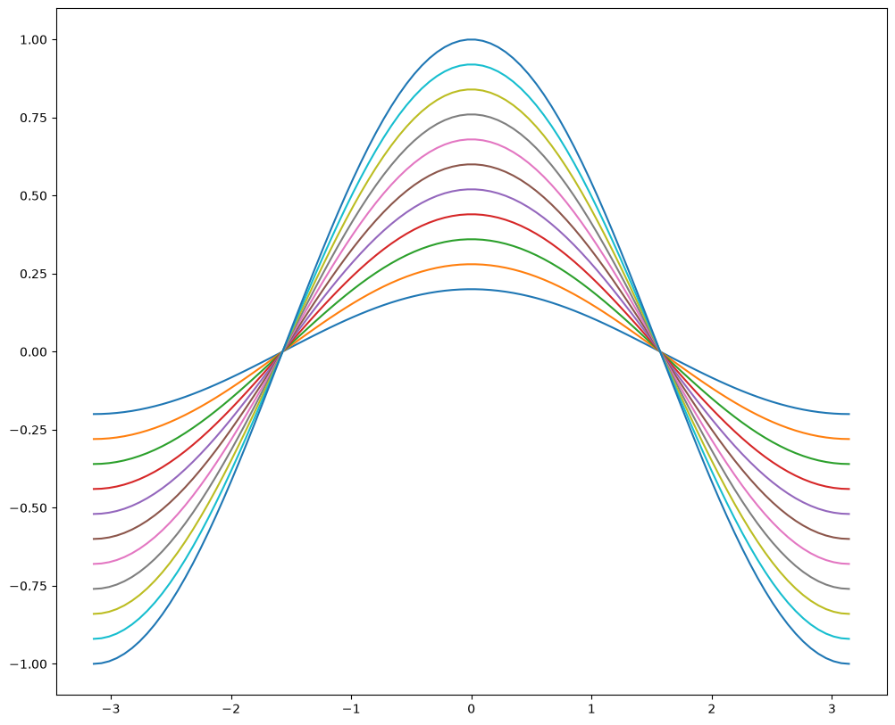
Markers#
There are lots of different markers availabile in matplotlib!
fig, axes = plt.subplots(figsize=(12, 5), ncols=2)
axes[0].plot(x[:20], y[:20], marker='.')
axes[0].plot(x[:20], z[:20], marker='o')
axes[1].plot(x[:20], z[:20], marker='^',
markersize=10, markerfacecolor='r',
markeredgecolor='k')
[<matplotlib.lines.Line2D at 0x116b49a90>]
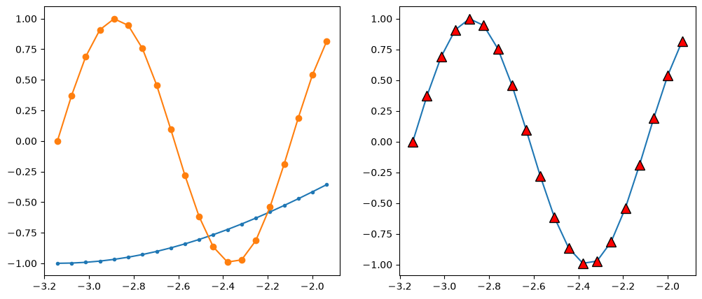
Label, Ticks, and Gridlines#
fig, ax = plt.subplots(figsize=(12, 7))
ax.plot(x, y)
ax.set_xlabel('x')
ax.set_ylabel('y')
ax.set_title(r'A complicated math function: $f(x) = \cos(x)$')
ax.set_xticks(np.pi * np.array([-1, 0, 1]))
ax.set_xticklabels([r'$-\pi$', '0', r'$\pi$'])
ax.set_yticks([-1, 0, 1])
ax.set_yticks(np.arange(-1, 1.1, 0.2), minor=True)
#ax.set_xticks(np.arange(-3, 3.1, 0.2), minor=True)
ax.grid(which='minor', linestyle='--')
ax.grid(which='major', linewidth=2)
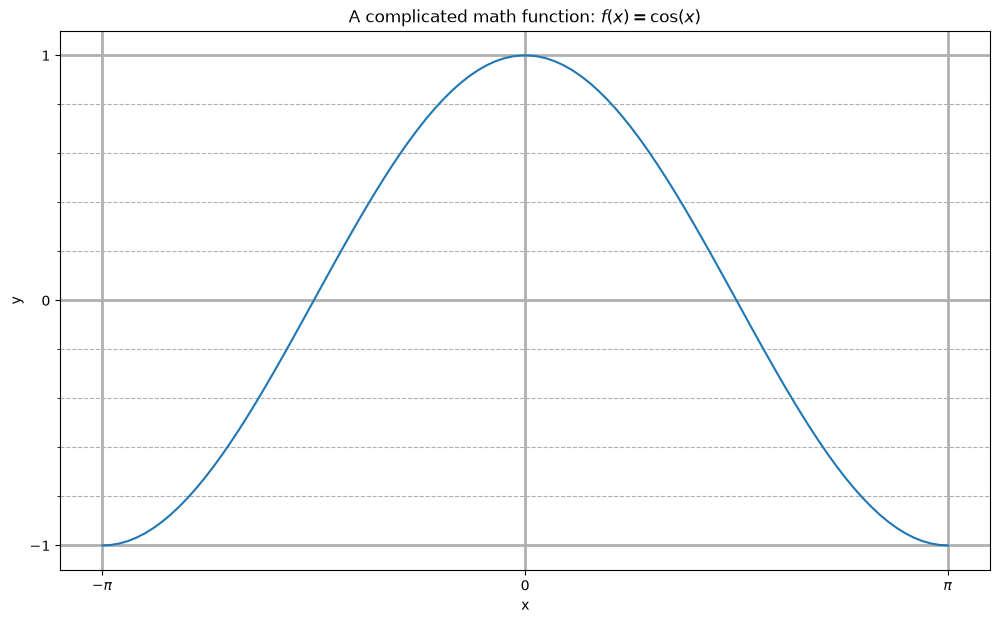
Axis Limits#
fig, ax = plt.subplots()
ax.plot(x, y, x, z)
ax.set_xlim(-5, 5)
ax.set_ylim(-3, 3)
(-3.0, 3.0)
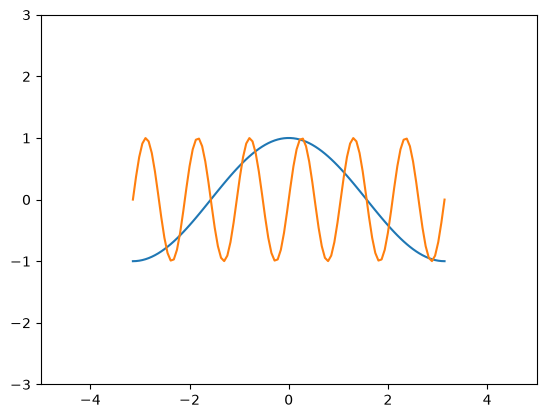
Text Annotations#
fig, ax = plt.subplots()
ax.plot(x, y)
ax.text(-3, 0.3, 'hello world')
ax.annotate('the maximum', xy=(0, 1),
xytext=(0, 0), arrowprops={'facecolor': 'k'})
Text(0, 0, 'the maximum')
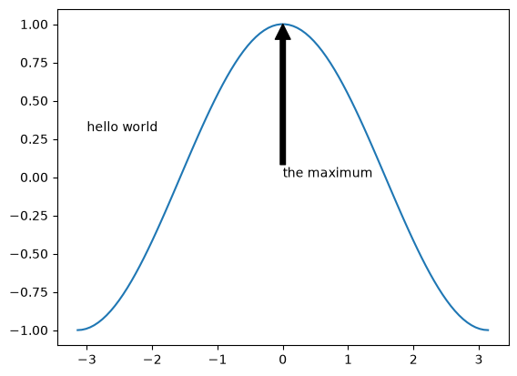
Other 1D Plots#
Scatter Plots#
fig, ax = plt.subplots()
splot = ax.scatter(y, z, c=x, s=(100*z**2 + 5))
fig.colorbar(splot)
<matplotlib.colorbar.Colorbar at 0x107e7fbf0>
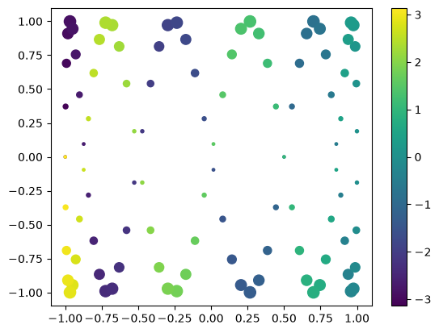
Bar Plots#
labels = ['first', 'second', 'third']
values = [10, 5, 30]
fig, axes = plt.subplots(figsize=(10, 5), ncols=2)
axes[0].bar(labels, values)
axes[1].barh(labels, values)
<BarContainer object of 3 artists>
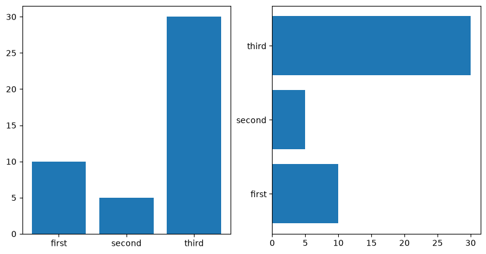
2D Plotting Methods#
imshow#
x1d = np.linspace(-2*np.pi, 2*np.pi, 100)
y1d = np.linspace(-np.pi, np.pi, 50)
xx, yy = np.meshgrid(x1d, y1d)
f = np.cos(xx) * np.sin(yy)
print(f.shape)
(50, 100)
fig, ax = plt.subplots(figsize=(12,4), ncols=2)
ax[0].imshow(f)
ax[1].imshow(f, origin='lower')
<matplotlib.image.AxesImage at 0x126925640>
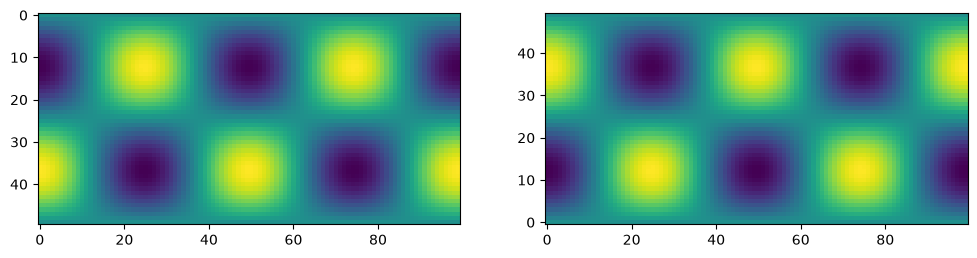
pcolormesh#
fig, ax = plt.subplots(ncols=2, figsize=(12, 5))
pc0 = ax[0].pcolormesh(x1d, y1d, f)
pc1 = ax[1].pcolormesh(xx, yy, f)
fig.colorbar(pc0, ax=ax[0])
fig.colorbar(pc1, ax=ax[1])
<matplotlib.colorbar.Colorbar at 0x126a358e0>
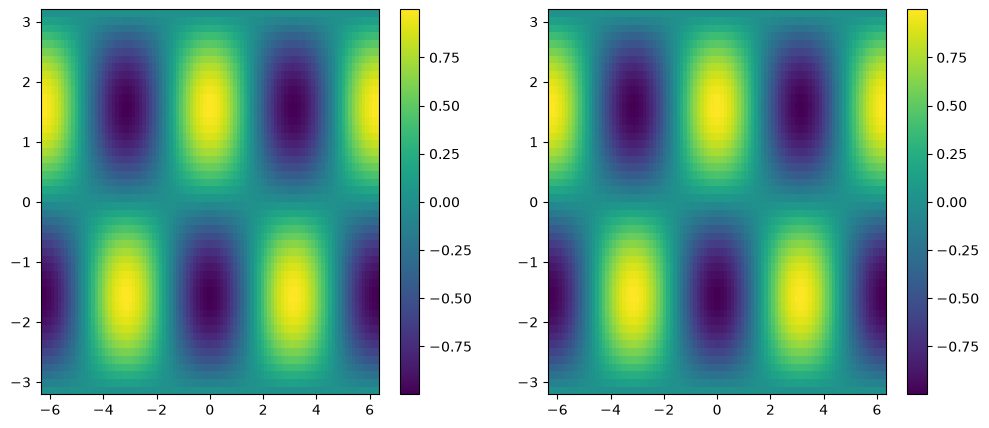
x_sm, y_sm, f_sm = xx[:10, :10], yy[:10, :10], f[:10, :10]
fig, ax = plt.subplots(figsize=(12,5), ncols=2)
# last row and column ignored!
ax[0].pcolormesh(x_sm, y_sm, f_sm, edgecolors='k')
# same!
ax[1].pcolormesh(x_sm, y_sm, f_sm[:-1, :-1], edgecolors='k')
<matplotlib.collections.QuadMesh at 0x126adecc0>
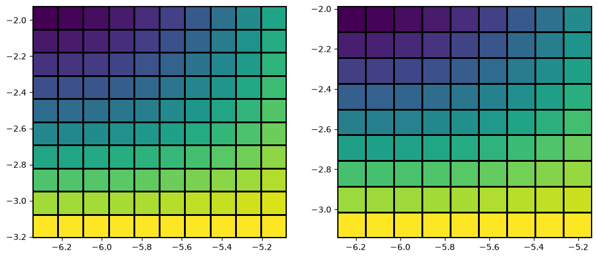
y_distorted = y_sm*(1 + 0.1*np.cos(6*x_sm))
plt.figure(figsize=(12,6))
plt.pcolormesh(x_sm, y_distorted, f_sm[:-1, :-1], edgecolors='w')
plt.scatter(x_sm, y_distorted, c='k')
<matplotlib.collections.PathCollection at 0x116be0aa0>
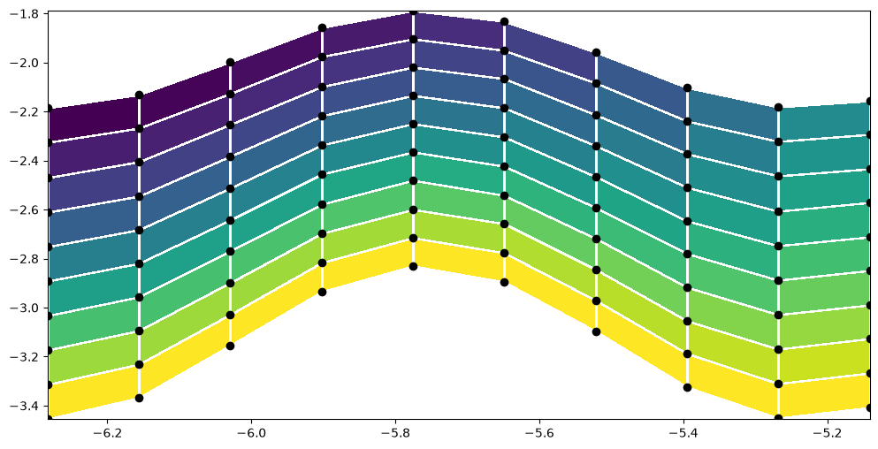
contour / contourf#
fig, ax = plt.subplots(figsize=(12, 5), ncols=2)
# same thing!
ax[0].contour(x1d, y1d, f)
ax[1].contour(xx, yy, f)
<matplotlib.contour.QuadContourSet at 0x116987530>
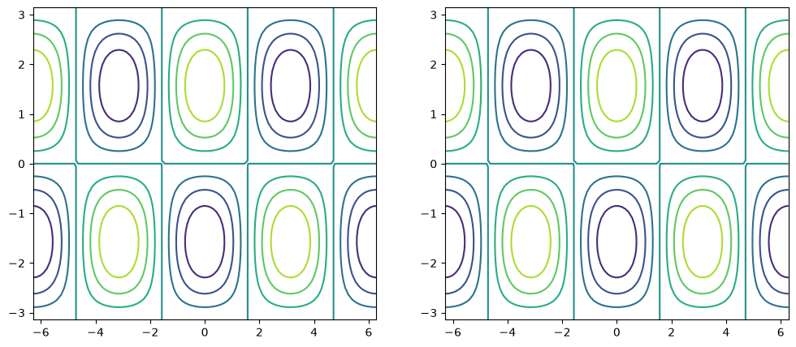
fig, ax = plt.subplots(figsize=(12, 5), ncols=2)
c0 = ax[0].contour(xx, yy, f, 5)
c1 = ax[1].contour(xx, yy, f, 20)
plt.clabel(c0, fmt='%2.1f')
plt.colorbar(c1, ax=ax[1])
<matplotlib.colorbar.Colorbar at 0x107f2a1b0>
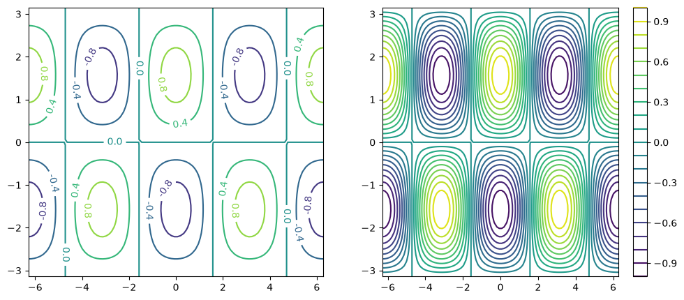
fig, ax = plt.subplots(figsize=(12, 5), ncols=2)
clevels = np.arange(-1, 1, 0.2) + 0.1
cf0 = ax[0].contourf(xx, yy, f, clevels, cmap='RdBu_r', extend='both')
cf1 = ax[1].contourf(xx, yy, f, clevels, cmap='inferno', extend='both')
fig.colorbar(cf0, ax=ax[0])
fig.colorbar(cf1, ax=ax[1])
<matplotlib.colorbar.Colorbar at 0x1368fc050>
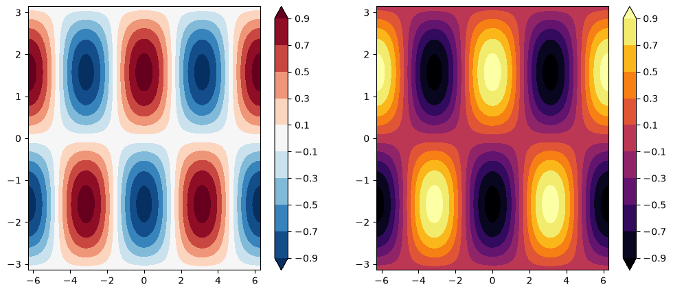
quiver#
u = -np.cos(xx) * np.cos(yy)
v = -np.sin(xx) * np.sin(yy)
fig, ax = plt.subplots(figsize=(12, 7))
ax.contour(xx, yy, f, clevels, cmap='RdBu_r', extend='both', zorder=0)
ax.quiver(xx[::4, ::4], yy[::4, ::4],
u[::4, ::4], v[::4, ::4], zorder=1)
<matplotlib.quiver.Quiver at 0x136a35250>
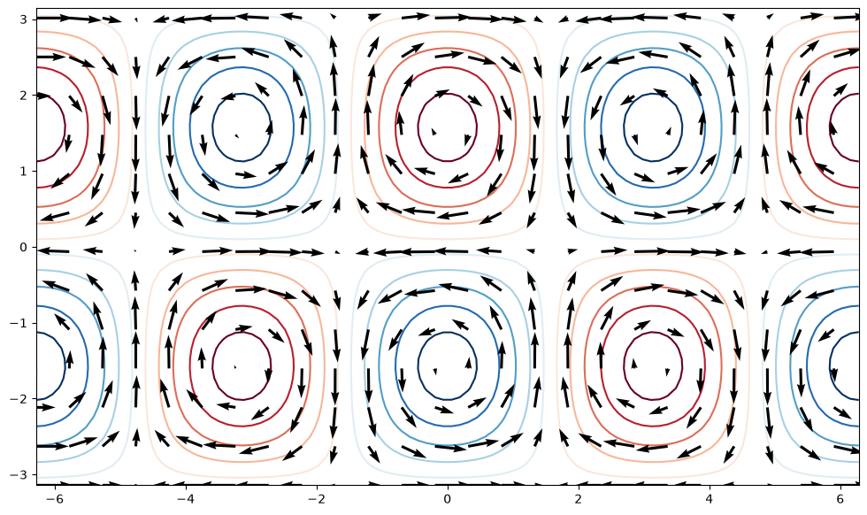
streamplot#
fig, ax = plt.subplots(figsize=(12, 7))
ax.streamplot(xx, yy, u, v, density=2, color=(u**2 + v**2))
<matplotlib.streamplot.StreamplotSet at 0x116af0980>
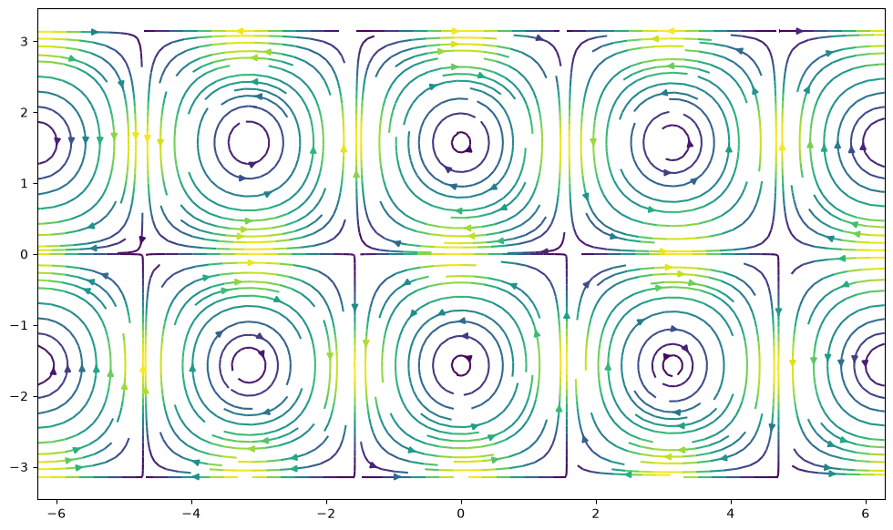